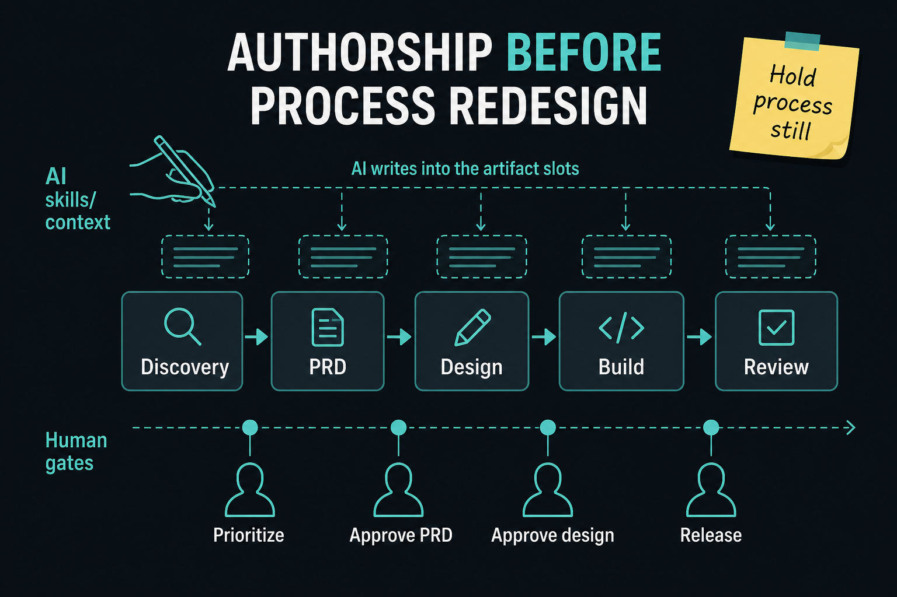

Change authorship before you redesign the process
Source: Scrum.org (@Scrumdotorg) · Yuval Yeret
original post
What it claims
In an agentic rollout, the first change is who writes the artifacts — not how you plan or deliver. Yuval Yeret (via Next Insurance’s Shay Mandel): keep quarterly planning, Sprint Planning, roadmaps, and the board; encode the stages of good requirements as reusable skills/context so agents draft the PRD and pre-reviews. People become developers of the system (skills + context), not hand-authors of every document. Process redesign comes later — when the board stops telling you where the work is.
Why it matters for a PO
Leadership demos AI and then asks for a new ceremony set. Changing process and automation at once makes results unreadable. A PO who holds Sprint Planning and the Product Backlog still, while shifting authorship to inspectable skills, can see whether quality rose before inventing a new operating model. Human gates stay explicit: priority, PRD approve, tech-design approve, release.
3 takeaways
- Authorship first, process second — same lifecycle, different hands on the pen.
- Fix the system that writes the artifact (context/skills), not only the bad output.
- Name human decision altitudes out loud; treat the harness as a product non-engineers can use.
Practice this week
Pick one recurring artifact you own (PRD section, acceptance criteria, or Sprint Goal draft). Write a one-page “skill” that interviews you for measure, impact, and constraints, then drafts that section. Keep Planning unchanged. After two uses, list one context fix you’d make instead of rewriting by hand — and one human gate you refuse to remove.